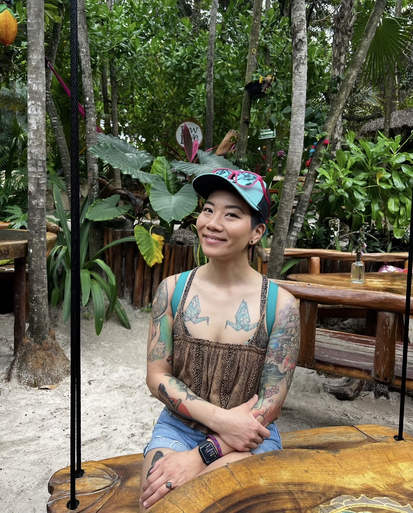

Wakako Nishimura-Anderson (she/her) is a UX Engineer for Target Corporation. She started her career as a process analyst while going to school part-time for Computer Science. In that role, she worked on managing projects for IT contractors. Wakako transitioned to a software engineer role after managing projects for two years. As an engineer, she worked on writing automation software for recovering failing technology at Target stores and worked on solving incidents that would fall into their workgroup bucket. During that process, she worked on some of the front-end code for mobile apps and developed an interest in UX design. When the pandemic hit, her engineering team went through a reorganization, which gave her an opening to look further into UX as a career. During the reorg, she started working on her first UX case study and presented a presentation for interviews. When a UX designer role opened, she applied immediately and made her next career transition while fully remote. After her second year in UX design, she completed her degree in Comp Science and then went back to school to study UX, using her background in engineering to help combine the two disciplines as a UX Engineer. She is finishing a boot camp course in UX and UI design and plans to go back to school after she completes the course. Outside of her career goals, she is a passionate animal advocate, volunteering on the board of directors as a secretary for a nonprofit called Dogs Of a Good Society (DOGS). She is also on a competitive dog relay racing team sport called flyball with her rescue dog, Mochi. Together, they've competed for ten years and just started training their most recent foster failure, Rocky.